전파전자통신기능사 (2014-03-09 기출문제)
1과목: 임의 구분
1. 야기(Yagi) 안테나 소자 중 가장 짧은 소자의 역할과 리액턴스 성분은 무엇인가?
- 반사기, 유도성
- 도파기, 용량성
- 투사기, 용량성
- 투사기, 유도성
(정답률: 48%)

2. 정류 전원회로에서 무부하시 직류전압이 100[V]이고, 전압 변동률이 25 [%]일 우, 전부하시 전압(Vo)은 얼마인가?
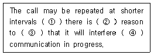
- 70[V]
- 80[V]
- 90[V]
- 100[V]
(정답률: 74%)
3. 전리층의 이론상 높이를 구하는 식으로 옳은 것은? (단, t는 지표파와 전리층 반사파와의 시간차, c는 빛의 속도이다.)
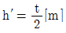
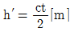
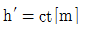
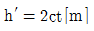
(정답률: 90%)
4. 1[W]는 몇 [dBm] 인가?
- 0[dBm]
- 10[dBm]
- 20[dBm]
- 30[dBm]
(정답률: 61%)
5. 슈퍼헤테로다인 수신기에서 발생하는 영상주파수는? (단, 수신주파수, 국부발진주파수, 중간주파수를 fr, fo, fi라고 하며, 상측 헤테로다인 방식의 주파수 변환을 한다.)
- fi + fr
- fi - fr
- fo - fr
- fr + 2fi
(정답률: 76%)
6. 다음 중 선박에 설치된 위성EPIRB 의 자유부상 조건을 바르게 나타낸 것은?
- 설치대의 압력 센서가 수심 12미터 이내
- 설치대의 압력 센서가 수심 8 미터 이내
- 설치대의 압력 센서가 수심 4 미터 이내
- 설치대의 압력 센서가 수심 20 미터 이내
(정답률: 73%)
7. 반파장 다이폴안테나에서 안테나에 공급되는 전력이 100[W]이고 전파가 최대로 방사되는 방향으로의 거리가 7[m]일 때 전기장의 세기[E]는 얼마가 되는가?
- 1[Ｖ/m]
- 5[Ｖ/m]
- 10[Ｖ/m]
- 15[Ｖ/m]
(정답률: 62%)
8. 다음 중 수직 편파용 수평면 내 무지향성 안테나가 아닌 것은?
- Brown 안테나
- Whip안테나
- Super gain 안테나
- 원형 slot 안테나
(정답률: 40%)
9. 다음 중 FET 고주파 증폭회로의 특징으로 잘못된 것은?
- 입력 임피던스가 매우 낮다.
- 소비전력이 적다.
- 잡음이 적다.
- 열적으로 안정하다.
(정답률: 46%)
10. 다음 중 정전압 회로에 주로 사용되는 다이오드는?
- 터널 다이오드(Tunnel Diode)
- 제너 다이오드(Zener Diode)
- 쇼트키 다이오드(Schottky Diode)
- 바렉터 다이오드(Varator Diode)
(정답률: 81%)
11. 표준신호발생기(SSG)의 출력 전압 10[uV]를 [dB]로 표사하면? (단, SSG에서 1[uV] 0[dB]이다)
- 10[dB]
- 20[dB]
- 30[dB]
- 40[dB]
(정답률: 50%)
12. 다음 중 사용 가능한 주파수 대역을 여러 대역으로 분할하여 접속하는 다원접속 방식은?
- TDMA
- CDMA
- GSM
- FDMA
(정답률: 59%)
13. 다음 중 통신위성 종류가 다른 한 가지는?
- 수동 위성
- 정지 위성
- 랜덤 위성
- 위상 위성
(정답률: 40%)
14. 송신 안테나의 높이가 100[m]이고, 수신 안테나의 높이가 100[m]일 때, 실제 전파의 가시거리는 약 얼마인가?
- 41 [km]
- 51 [km]
- 61 [km]
- 82 [km]
(정답률: 75%)
15. 무선 송신기의 발진부 역할을 바르게 나타난 것은?
- 반송파를 만든다.
- 변조파를 발진시킨다.
- 피변조파를 만든다.
- 신호파를 발진시킨다.
(정답률: 78%)
16. 국재업무를 제공하는 NAVTEX 해안국의 통신권은?
- 반경 200NM이내 해역
- 반경 300NM이내 해역
- 반경 400NM이내 해역
- 반경 500NM이내 해역
(정답률: 44%)
17. 다음 중 단파용 안테나에 속하지 않는 것은?
- 반파장 다이폴 안테나
- 역 L형 안테나
- 롬빅 안테나(Rhombic) 안테나
- 빔 안테나
(정답률: 66%)
18. 특성 임피던스 Zo = 90[Ω]인 급전선에 부하 저항 10[Ω]을 연결할 때 전류투과계수는 얼마인가?
- 1
- 1.5
- 1.8
- 2.0
(정답률: 39%)
19. 어떤 전송시스템에서 코드효율이 1이고, 전송효율이 0.8일 때 전송효율은?
- 1.8
- 1
- 0.8
- 0.2
(정답률: 80%)
20. GMDSS적용 선박의중파(MF)대 무선 설비로서 반드시 갖추어야 하는 주파수와 장치로 옳은 것은?
- 2187.5 khz의 DSC 및 DSC WKR장치
- 2282.5 khz의 DSC 및 DSC WKR장치
- 2313.5 khz의 DSC 및 DSC WKR장치
- 2368.5 khz의 DSC 및 DSC WKR장치
(정답률: 72%)
2과목: 임의 구분
21. 다음 중 구명정을 의미하는 단어는?
- life jacket
- life boat
- life signal
- life raft
(정답률: 79%)
22. 다음 문장의 밑줄 부분에 들어갈 적당한 문장은?
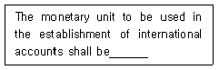
- either the monetary unit of the IMF or the U.S. Dollar
- either the monetary unit of the IMF or the Gold Franc.
- either the monetary unit of the IMF or the local money
- either the monetary unit of the IMF or the U.K. Pound
(정답률: 77%)
23. 다음 뜻의 약어는?
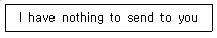
- NIL
- NO
- NW
- OL
(정답률: 83%)
24. 다음 중 “대리점”의 영문표기로 올바른 것은?
- Consignee
- Charterer
- Shipowner
- Agent
(정답률: 72%)
25. 다음 문장의 ( ) 안에 들어 갈 단어로 틀린 것은?
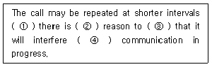
- it's
- no
- believe
- with
(정답률: 44%)
26. 다음 문맥상 괄호 안에 가장 적당한 단어는?
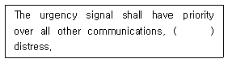
- except
- ever
- whenever
- of
(정답률: 77%)
27. 다음 문장의 괄호 안에 들어갈 적당한 단어는?
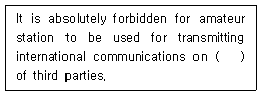
- behalf
- sent
- fear
- peat
(정답률: 62%)
28. 다음 문장의 가장 적당한 답변은?
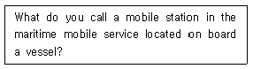
- We call it a marine mobile station
- We call it a coast station
- We call it a ship station
- We call it a mobile station
(정답률: 52%)
29. What is the meaning of “Plenipotentiary Conference”?
- 이사회의
- 전권위원회의
- 주관청회의
- 자문위원회의
(정답률: 73%)
30. 다음 전문내용 중 밑줄 친 부분의 뜻을 잘못 설명한 것은?
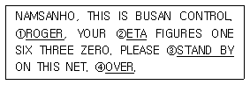
- 수신하고 이해하였다
- 도착예정시간
- 잠시 기다려라
- 귀국의 통화가 끝났는가
(정답률: 73%)
31. “S" 자를 송신할 때 사용하는 단어는?
- Sierra
- Signal
- Sign
- Soul
(정답률: 69%)
32. “감도가 크나 (음이)찌그러졌습니다.” 의 표현은?
- loud but distorted
- weak but readable
- strong and readable
- loud and clear
(정답률: 68%)
33. 문맥상 괄호 안에 가장 적당한 단어는?
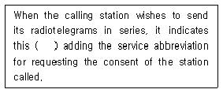
- by
- of
- ever
- except
(정답률: 43%)
34. 찬 공기 덩어리와 더운 공기 덩어리가 마주칠 때 그 세력이 비슷하여 움직이지 않고 한 곳에 오랫동안 머물러 있는 전선은?
- Cold front
- Warm front
- Stationary front
- Occluded front
(정답률: 62%)
35. “귀국의 운용 통신주파수는 얼마입니까?”를 영역할 경우, 괄호안에 들어갈 알맞은 단어는?
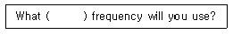
- acting
- working
- kind
- watching
(정답률: 80%)
36. 다음 문장 중 괄호 안에 들어갈 단어로 적합한 것은?
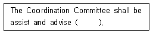
- the Administration
- the council
- the Staff
- the Secretary-General
(정답률: 59%)
37. Which has the nearest meaning with the given following sentence?
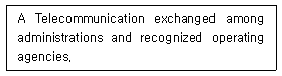
- Service telecommunication
- Government telecommunication
- Official telecommunication
- lnternational telecommunication
(정답률: 39%)
38. 다음 한글 문장을 표준 해사 영어로 영역한 문장의 ( ) 안에 들어갈 가장 적당한 단어는?
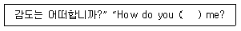
- read
- call
- answer
- listen
(정답률: 75%)
39. 다음 문장의 괄호 안에 들어갈 적당한 단어는?
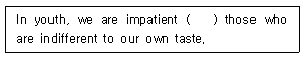
- to
- of
- as
- in
(정답률: 68%)
40. Choose the suitable one in the blank and complete following sentence.
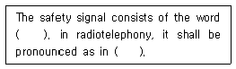
- MAYDAY, english
- PAN, English
- PAN, French
- SECURITE, French
(정답률: 72%)
3과목: 임의 구분
41. 아래의 문장 중에서 ( ) 안에 들어갈 가장 적합한 용어는?
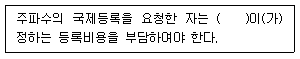
- 국제연합
- 국제전기통신연합
- 국제전기통신협약
- 국제주파수등록위원회
(정답률: 41%)
42. 국제전기통신연합의 소재지는?
- 프랑스
- 러시아
- 스위스
- 미국
(정답률: 84%)
43. 통신보안의 제 2차적 책임은 누구에게 있는가?
- 통신이용자
- 전문기안자
- 지휘책임자
- 전문통제자
(정답률: 65%)
44. 선박에서 조난이 발생하여 조난호출에 이어 조난통보를 송신하고자 한다. 다음 중 조난통보에 반드시 포함해야 하는 사항이 아닌 것은?
- 조난선박의 명칭
- 조난발생의 원인
- 조난선박의 경도 및 위도
- 필요로 하는 구조의 종류
(정답률: 76%)
45. 신호의 강도가 어떠한지에 대한 “QSA?”의 대답으로 “4”에 해당하는 의미는?
- 약합니다.
- 강합니다.
- 양호합니다.
- 시시로 해독합니다.
(정답률: 81%)
46. 미래창조과학부가 대가에 의한 주파수를 할당하는 경우 주파수의 이용기간은 최대 몇 년의 범위에 정하여 고시하는가?
- 5년
- 10년
- 15년
- 20년
(정답률: 66%)
47. 국제전기통신연합(ITU)의 목적에 해당하지 않는 것은?
- 모든 세계 주민에게 새로운 전기통신기술의 이용확장을 촉진한다.
- 전기통신의 개선과 합리적 이용을 위하여 전 회원국간의 국제적인 협력을 유지하고 증진한다.
- 전기통신업무의 협력을 통하여 인명의 안전을 확보하는 조치를 촉진한다.
- 평화적 관계를 증진할 목적으로 전기통신업무의 이용을 촉진한다.
(정답률: 68%)
48. 다음 중 미래창조과학부 장관이 청문을 하여야 경우에 해당되지 않는 경우는?
- 주파수 회수
- 주파수 할당의 취소
- 주파수 재배치
- 기술자격의 정지
(정답률: 66%)
49. 다음 중 방향탐지에 대한 방지책으로 거리가 먼 것은?
- 불필요한 통신 또는 전파발사 억제
- 예비주파수로 전환
- 통신제원의 수시 변경
- 무선침묵 유지
(정답률: 35%)
50. SSB 무선전화 전파형식의 표기법에서 발사의 등급을 “J?E"의 형태로 표현할 때, 가운데 물음표(?)에 사용되는 숫자는?
- 0
- 1
- 5
- 3
(정답률: 68%)
51. 다음 중 주파수 할당의 결격사유에 해당되지 않는 것은?
- 외국정부
- 외국의 단체
- 전파법을 위반하여 금고 이상의 형의 집행유예를 선고 받고 그 유예기간 중에 있는 자
- 전파법을 위반하여 금고 이상의 실형을 선고 벋고 그 집행이 끝나거나 집행을 받지 아니하기로 확장된 날로부터 2년이 지난 자
(정답률: 87%)
52. 주파수 분배 시 고려해야 할 사항이 아닌 것은?
- 주파수의 이용현황 등 국내의 주파수 이용여건
- 전파 이용 기술의 발전 추세
- 국제적인 주파수 사용 동향
- IT 산업의 발전 동향
(정답률: 62%)
53. 선박국이 항행 중에 긴급한 상황이 발생하여 긴급호출을 하고자 할 때 누구의 명령에 따라 행하여야 하는가?
- 선박의 통신사
- 선박의 책임자
- 선박의 선주
- 선박관할의 해안국 당무자
(정답률: 78%)
54. Inmarsat에서 운영하는 정지위성이 아닌 것은?
- 태평양 위성
- 인도양 위성
- 남대서양 위성
- 동대서양 위성
(정답률: 61%)
55. 다음 중 미래창조과학부가 전파이용의 촉진과 전파와 관련된 새로운 기술의 개발 및 전파 방송기기 산업의 발전 등을 위한 전파진흥기본계획을 세울 때 의무적인 사항이 아닌 것은?
- 새로운 전파자원의 개발
- 우주통신의 개발
- 해양통신의 개발
- 전파환경의 개선
(정답률: 73%)
56. H3E 전파를 사용하는 무선설비의 점유주파수대폭의 허용치는?
- 1[kHz]
- 3[kHz]
- 5[kHz]
- 10[kHz]
(정답률: 48%)
57. 다음 중 전파법시행령에 관한 사항으로 옳지 않은 것은?
- 이 법령은 국회에서 제정한다.
- 전파법에서 위임된 사항을 규정한다.
- 전파법의 시행에 필요한 사항을 규정한다.
- 이 법령은 대통령령이다.
(정답률: 47%)
58. 다음 중 선박통항관리시스템(VTS)을 운영하고 있지 않는 항만(항구)는?
- 부산항
- 동해항
- 속초항
- 대산항
(정답률: 48%)
59. 다음 중 송신보안 보호 방책과 관계가 없는 것은?
- 무선침묵 유지
- 통신절차 엄수
- 가능한 인편으로 전달
- 평문 사용 금지
(정답률: 68%)
60. 통신보안의 3대 수단에 해당되지 않는 것은?
- 암호보안
- 송신보안
- 시설보안
- 자재보안
(정답률: 44%)